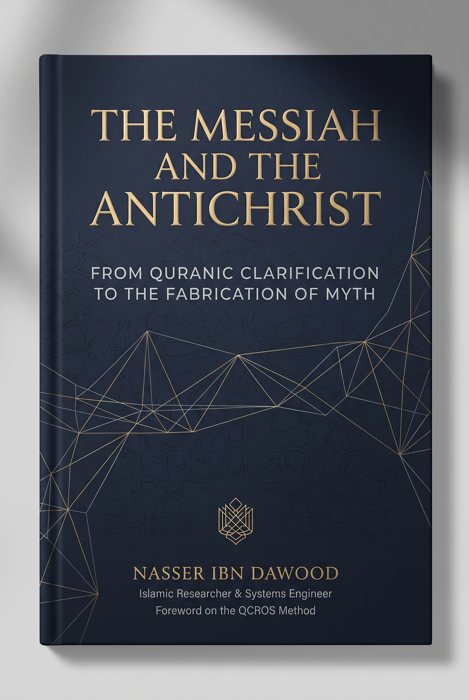

125. The Messiah and the Dajjal — From Qur’anic Discourse to the Making of Myth

A study of Qur’anic language, narrated traditions, comparative history, and the reception of the Dajjal concept. It distinguishes corpus observations, report criticism, historical hypotheses, and interpretive models, preserving open issues without forced identifications with people or technologies. Condensed conceptual English edition.
This is a condensed conceptual English edition, not a complete word-for-word translation. The Arabic text remains the primary source for detailed analysis and references.
قراءة PDF داخل الموقع / Read the PDF on this website
جارٍ تجهيز القارئ… / Preparing the reader…
Book Summary, Table of Contents & Excerpt
The Messiah and the Dajjal
From Qur’anic Discourse to the Making of Myth
Language, Narrated Traditions, Historical Comparison, and the Ethics of Evidence
Nasser Ibn Dawood
Condensed Conceptual English Edition • 2026
Based on the author’s revised Arabic manuscript
Scientific status: Composite Review Edition / Corpus-Verified / Open Issues Preserved
An independently readable adaptation, not a substitute for the full Arabic academic record.
I. The Global Knowledge Manifesto
Knowledge is a universal right. The author firmly believes that wisdom should not be locked behind paywalls or language barriers.
Global Access Policy: All books in this library are available for free in multiple digital formats (PDF, HTML, DOCX, TXT).
The Digital Library: As of early 2026, the collection hosts 236 volumes (118 in Arabic and 118 in English), fully optimized for AI-assisted research and digital archiving.
Official Platforms: Main Website: nasserhabitat.github.io/nasser-books/
GitHub: nasserhabitat/nasser-books
This manifesto is reproduced here as supplied by the author for this condensed edition.
II. Translator’s Note: The Bridge of Meaning
This English edition is a condensed conceptual adaptation. It is not a word-for-word translation, but rather an "extraction of essence." It presents the core philosophical framework in accessible English, omitting the exhaustive linguistic debates and classical references found in the original Arabic text.
For the academic researcher: The original Arabic version remains the primary source for comprehensive linguistic analysis, detailed exegesis (Tafsir), and the complete bibliography.
This adaptation also preserves the methodological status of the Arabic edition. A claim marked OPEN remains open; a CANDIDATE remains a candidate; a RESISTED or STRONGLY RESISTED claim is not revived through simplification; and a CLOSED result remains closed only within its declared scope. The aim is clarity without scientific inflation.
Key Qur’anic terms are sometimes retained in transliteration—such as nafs, tawaffī, barzakh, and baʿth—when a single English equivalent would prematurely narrow the field under study.
Editorial application to this volume: terms and statuses used below follow the Arabic manuscript. The general safeguards concerning RESISTED, STRONGLY RESISTED, and CLOSED do not imply that this study assigned those labels to every issue; specific results are stated individually. Qur’anic references identify passages; English explanations are conceptual paraphrases rather than imported translations.
How to Read This Edition
The book asks what follows, and what does not follow, from the Qur’anic vocabulary, the varying narrative traditions concerning the Dajjal, and the historical reception of those traditions. It is not a blanket rejection of hadith, an attempt to establish an invisible conspiracy, or a claim to settle all eschatological questions. The study treats the Qur’an as the governing textual corpus for Qur’anic concepts and subjects narrated reports to separate textual, transmission, historical, and interpretive tests.
Read each conclusion at its declared level. A word absent from the Qur’an can be identified as absent without thereby disproving every report outside it. A lexical correspondence can be documented without proving historical borrowing. A functional model can aid ethical deliberation without becoming a new article of belief.
A Reader’s Map of the Research
Section
Purpose
Foundations
Qur’anic corpus, lexical boundaries, semantic networks, and rules of inference.
Narratives and Reception
Distinct hadith clusters, textual variants, Syriac comparison, and later synthesis.
Qur’anic Regularities
Fitna, fasād, the Cave narratives, deception, agency, the Hour, and jinn.
Contemporary Testing
Assessing AI-related and political conspiracy claims without collapsing criticism into myth.
Registers and Appendices
Scientific statuses, fifteen open questions, diagrams in prose, and research route.
Abstract
The Qur’an uses the title al-Masīḥ for Jesus son of Mary, but its text contains neither the Arabic root d-j-l nor the compound al-Masīḥ al-Dajjāl. The Arabic manuscript identifies eleven uses of the title in nine verses, distinct from four indexed uses of the root m-s-ḥ. This is a textual finding, not a self-sufficient verdict on every extra-Qur’anic report. The study therefore follows two lines at once: a corpus-grounded investigation of Qur’anic vocabulary and a source-sensitive analysis of narrated descriptions of the Dajjal.